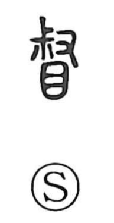

督

Uncategorized
Kun: | On: toku
to supervise ・ to oversee ・ to urge ・ to rectify
Explanation
督 is a phono-semantic compound with 叔 as its phonetic core, set over 目, the “eye.” Shirakawa interprets 叔 as the figure of grasping the head of the sacred battle-axe 戚, an emblem of ritual authority. Combined with the eye, the graph pictures authoritative watching—looking closely, supervising, and bringing things into proper order. Ancient glossaries such as the Er Ya gloss it as “to rectify,” while the Shuowen gives “to sense, to assess.” Thus the character centers on oversight carried out with sanctioned authority: to watch carefully, admonish, and set things right.